5.1 Download Managers Monitoring
The "Download Managers" tab in My account menu is dedicated to monitor the users'download managers. Several download managers can be installed by a user on different working machines. The user interface allows to install a local download manager through the link displayed in the Download managers tab.
The view is accessible through My account entry on the menu bar.
Information details are displayed for each of the available download managers : status, identifier, name, user ID, IP Address and the last access date. 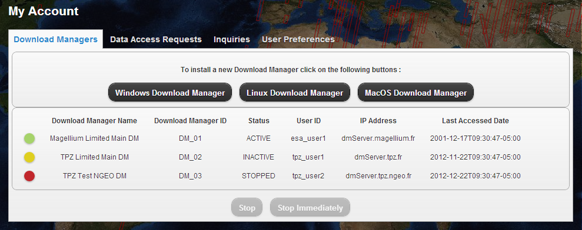
A registered download manager can have one of the three possible statuses:
- ACTIVE: is represented by the 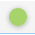 icon. An ACTIVE download manager is actually downloading products.
- INACTIVE: is represented by the icon. An INACTIVE download manager is an available download manager but does not have ongoing downloading tasks.
- STOPPED: is represented by the icon. A STOPPED download manager is a download manager which has been stopped and so it is not working.
A registered download manager can be managed once it is selected with the commands:
- Stop: is represented by the button
 .
.
This command makes the download manager stop be assigned to product downloads, purge scheduled/paused Product downloads, but continue ongoing downloading activities until these are finished.
- Stop Immediately: is represented respectively by the
button 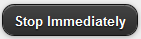 icon.
This command makes the download manager stop be assigned to product downloads and stop all ongoing and scheduled/paused Product downloads.
To manage a download manager, click on its row in the table, the command buttons are updated according to the download manager status. When a command button is clicked, the status change request is sent to the server and a notification message is displayed. 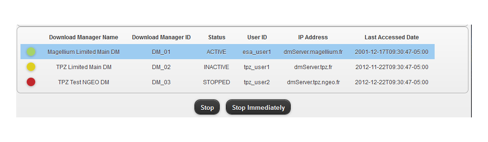
Only the ACTIVE and INACTIVE download managers can be managed. STOPPED download managers are only displayed.
Once the Stop or the Stop Immediately buttons are clicked, a new command cannot be issued from the user interface. A notification message is displayed to notify the user. 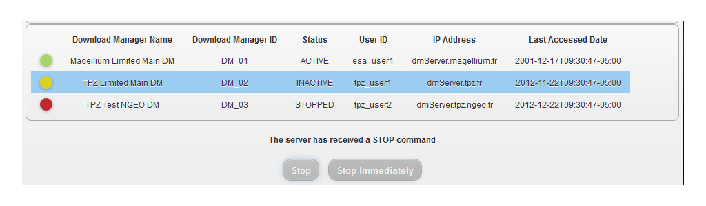
5.2 Data Access Requests Monitoring
User's submitted data access requests can be viewed and monitored through the Data Access Requests tab accessible through My account entry on the menu bar.
On the left side, the download managers already assigned to data access requests are displayed. On the right side is displayed the list of the users' data access requests.
Data Access Requests are either Simple Data Access Requests or Standing Order Data Access Requests.
The request list can be filtered by the download manager they are assigned to. By clicking, on the download manager name, the requests list is updated. 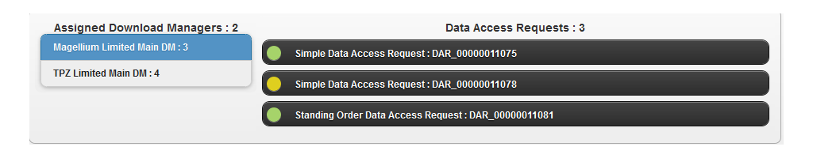
Click on the highlighted download manager name to disable the filtering.
A data access request can have one of the the possible statuses:
- Processing: is an going request, it is represented by the icon.
- Paused: is paused request, it is represented by the icon.
- Cancelled: is a cancelled request, it is represented by the icon.
- Completed: is a completed request.
Each request has details information. In order to seen them, click on the a data access request to expand its content.
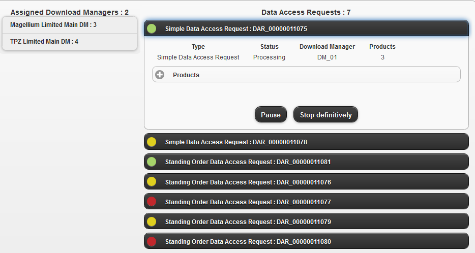.The data access request id, status, completion percentage and the number of products are displayed.
Buttons Pause, Resume and Stop Immediately buttons are displayed according to the request status.
Each Simple Data Access Request has products when it is submitted. However, standing order requests are submitted with scheduling options, so they do not have product urls when they are created.
During standing order request processing, when the products are ready, they should should appears in the Products sections.
Click on the Products button to visualize the products details.
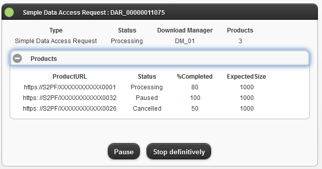Click on the Stop definitively button 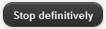 to cancel a processing or a paused data access request.
Click on the Pause button 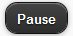 to pause a processing data access request.
Click on the Resume button 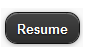 to change the status of a paused data access request to processing.
5.3 User Preferences
Click on the User Preferences tab in My account, the view lists just the last selected dataset and background layer.
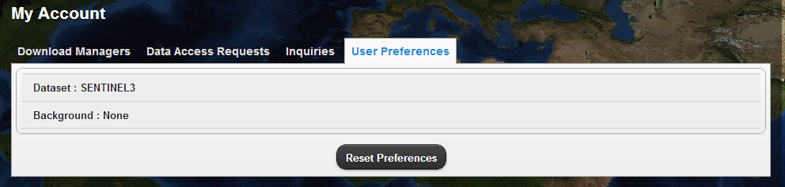5.4 Inquiries
Click on the Inquiries tab in My account, the view displays the inquiry form.
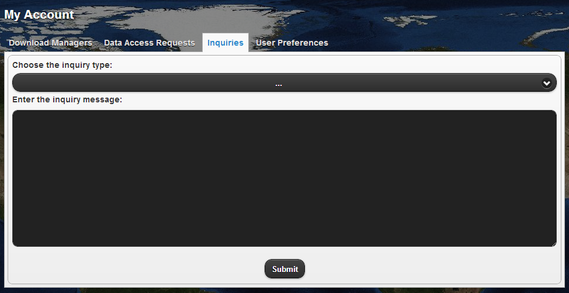To choose the inquiry type, click on the combobox and choose one of the possible inquiry types: Suggestion, Question, Complaint, Request for bulk order, Request on-demand media delivery, Other.
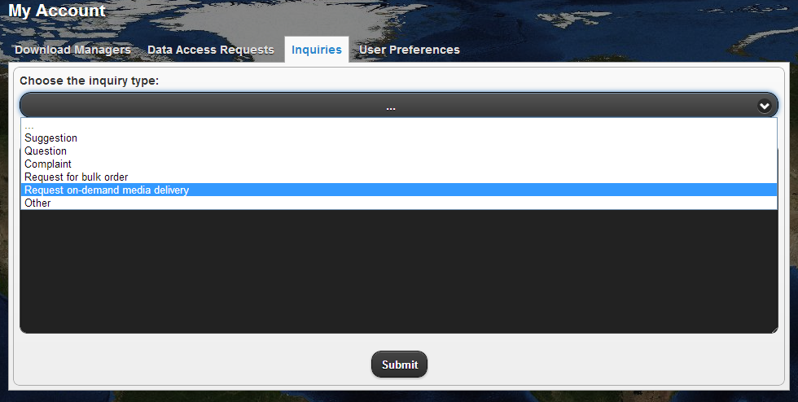The inquiry text message has to be typed in the text area underneath
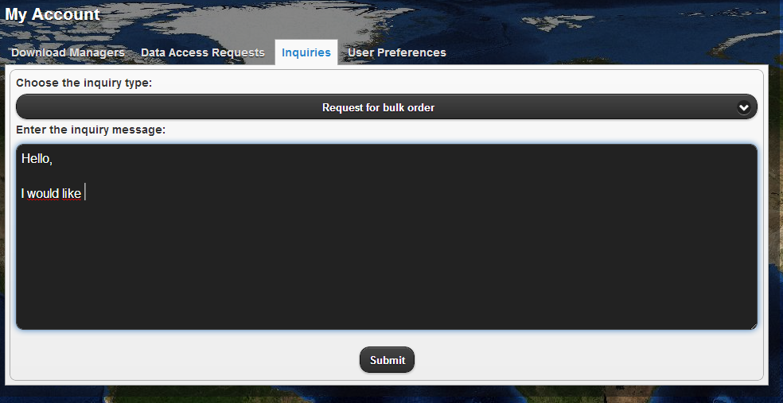 Finally click on the Submit button 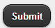to submit the inquiry request.